Single Malt Scotch Whisky
Glenfiddich 12 Year Old 1 ☆
Glenlivet 12 Year Old 3 ☆
Highland Park 12 Year Old 5 ☆ ☆
Old Pulteney 12 Year Old 2 ☆
Blended Scotch Whisky
J & B Rare6 × × ×
Johnnie Walker Black Label 12 Year Old 4 ☆ ☆

Johnnie Walker Red Label8 × × ×
Irish Whiskey
Bushmills Black Bush11 ☆
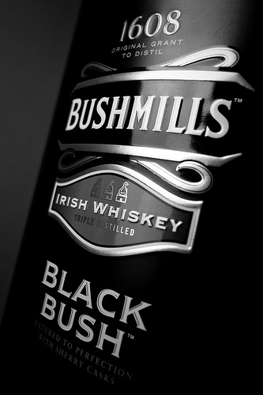
Jameson9 × × ×
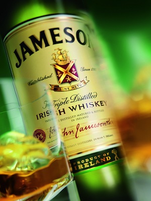
Redbreast 12 year Old12 ☆ ☆
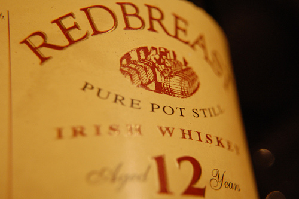
Bourbon
Basil Hayden's19 ☆ ☆ ☆
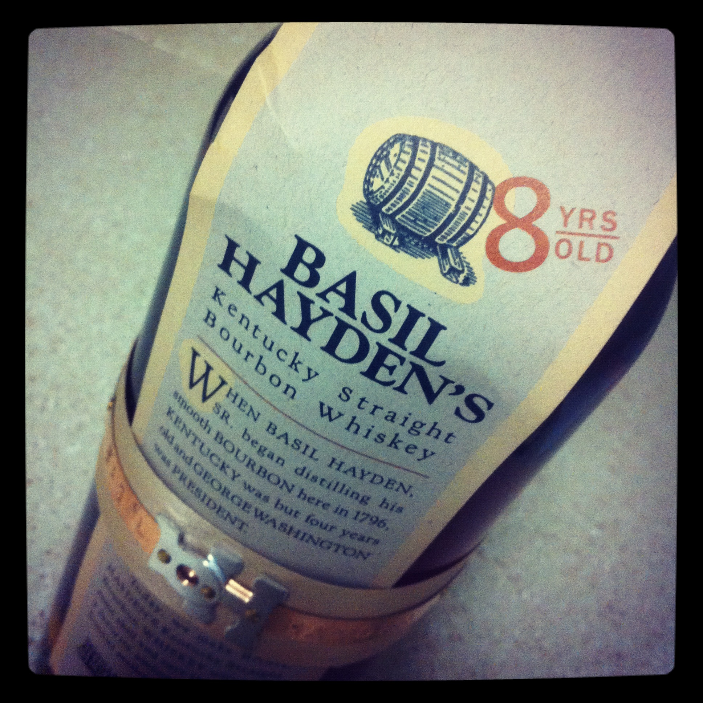
Blanton's Single Barrel15 × × ×
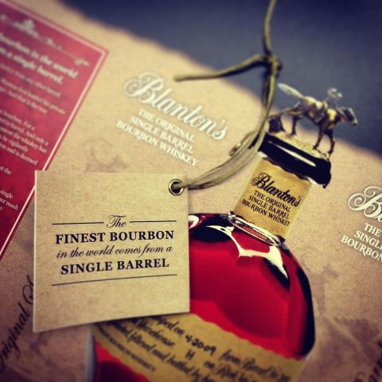
Booker's Bourbon25 ☆ ☆
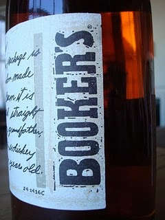
Buffalo Trace20 ☆
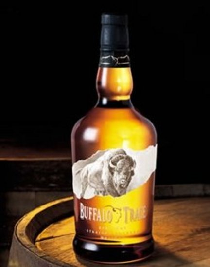
Elijah Craig 12 year old18 ☆
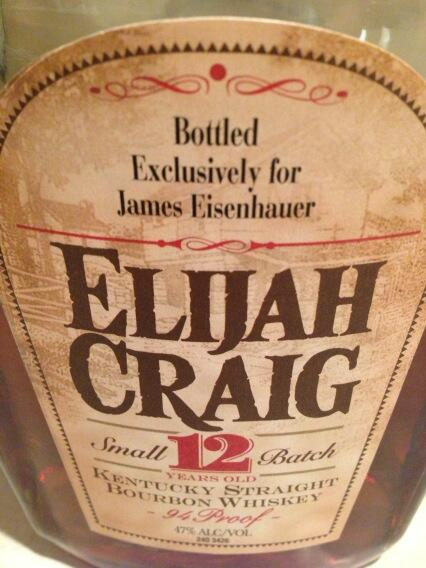
Elmer T. Lee23 ☆

Four Roses Single Barrel14 ☆ ☆
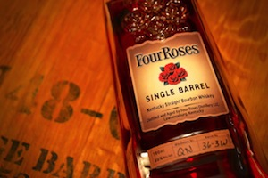
Four Roses Small Batch13 ☆ ☆ ☆
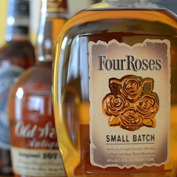
Jim Beam White Label21 × × ×
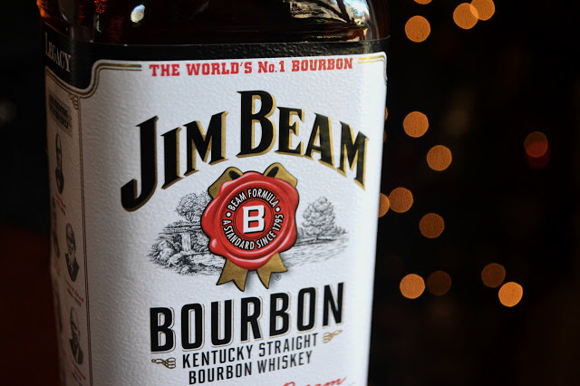
Knob Creek16 ☆ ☆
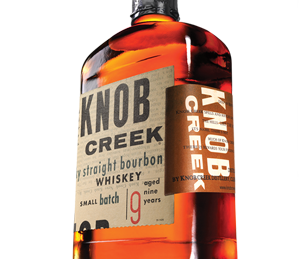
Maker's Mark7 ☆
Russell's Reserve24 ☆
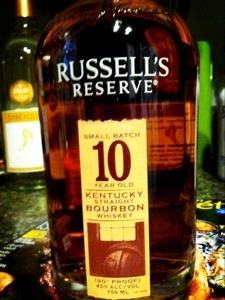
Woodford Reserve17 ☆ ☆
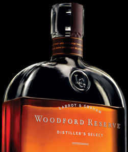
American Whiskey
Tennessee - Gentleman Jack10 ☆ ☆
Rye Whiskey
Jim Beam Rye27 ☆
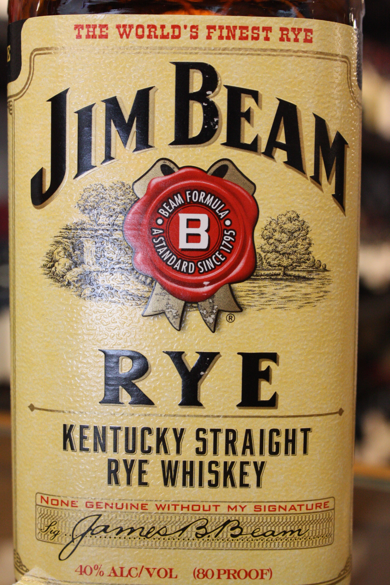
Knob Creek Rye22 ☆
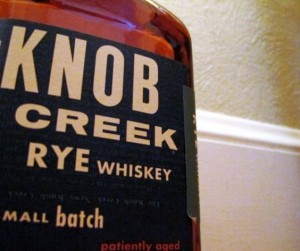
Añejo Rum
I know...not wisky but soo good!
Bacardi Reserva Limitada26 ☆ ☆ ☆
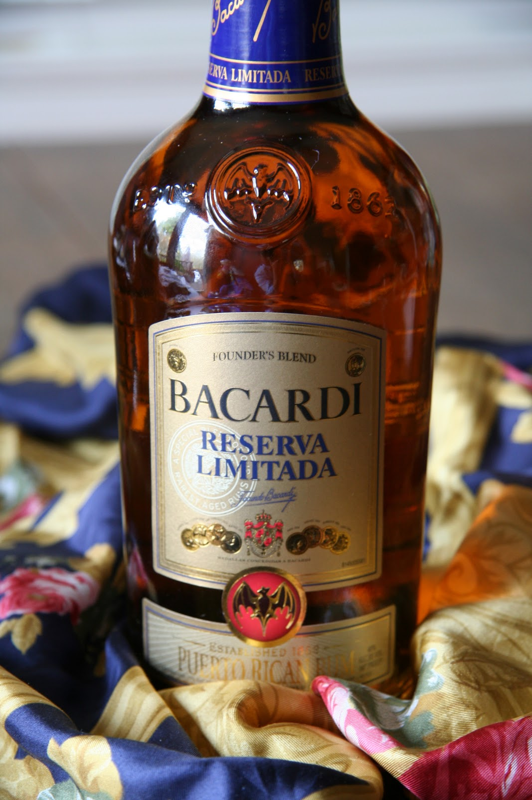
☆ ~ Like ☆ ☆ ~ Really Like ☆ ☆ ☆ ~ Love! × × × ~ No Love Chronological index1